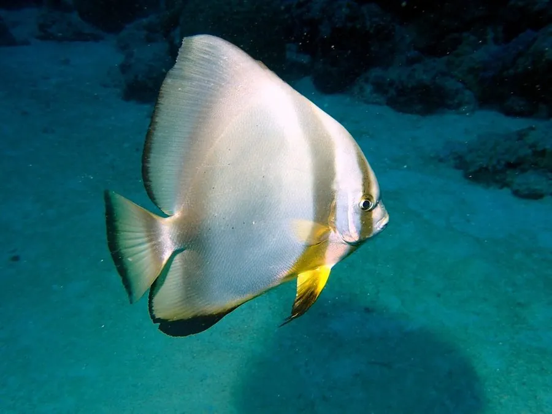

鱼类 · 动物界
圆燕鱼 Platax orbicularis

体形侧扁如圆盘、幼鱼体侧有黑色竖纹的珊瑚礁鱼，成鱼体色银灰，常成群在礁区游动，是常见的观赏鱼。
- 分类
- 门脊索动物门纲硬骨鱼纲目鲈形目科白鲳科属燕鱼属
- 栖息环境
- 热带珊瑚礁和潟湖，水深 1–40 m，常在礁石和珊瑚之间活动
- 地理分布
- 印度洋—太平洋热带海域，从东非、红海到日本南部、澳大利亚和波利尼西亚，中国南海及台湾周边有分布
- 保护级别
- 暂无评估；中国未列入国家重点保护野生动物名录
物种志
圆燕鱼体呈圆盘状、侧扁而高。幼鱼的体形更圆，背鳍和臀鳍高高竖起，体侧有 2–3 条黑色竖纹，模样十分醒目；成鱼体色转为银灰或黄褐，体侧竖纹逐渐变淡，但背鳍和臀鳍仍然较高。成鱼体长一般 30–45 cm，最大可超过 50 cm。
圆燕鱼分布于印度洋—太平洋的热带和亚热带珊瑚礁，从东非、红海到日本南部、澳大利亚和波利尼西亚，中国南海及台湾周边有分布。它栖息于礁区和潟湖，水深 1–40 m，是杂食性鱼类，吃藻类、小型无脊椎动物和浮游生物。幼鱼常躲在珊瑚枝和海藻之间，靠着体色和体形伪装躲避天敌；成鱼则多成群在礁区游动，行动缓慢而优雅。繁殖时在礁区产卵，卵为浮性，随水流漂流。圆燕鱼因外形奇特、幼鱼可爱，是水族市场上常见的观赏鱼。目前它没有IUCN 的正式评估，中国未将其列入国家重点保护野生动物名录。
形态与习性
- 食性杂食性，吃藻类、小型无脊椎动物和浮游生物
- 体长一般 30–45 cm，最大可超过 50 cm
- 栖息深度珊瑚礁和潟湖，水深 1–40 m
- 幼鱼特征体形更圆，背鳍臀鳍高耸，体侧有 2–3 条黑色竖纹
- 繁殖在礁区产卵，卵为浮性，随水流漂流
- 习性幼鱼躲藏在珊瑚和海藻间，成鱼多成群活动
趣味知识
- 圆燕鱼的幼鱼体侧有醒目的黑色竖纹，成鱼则逐渐变淡。
- 它的体形侧扁而高，游动时像一只圆盘在水中飘动。
- 幼鱼常藏身于珊瑚枝和海藻之间，靠着伪装躲避天敌。